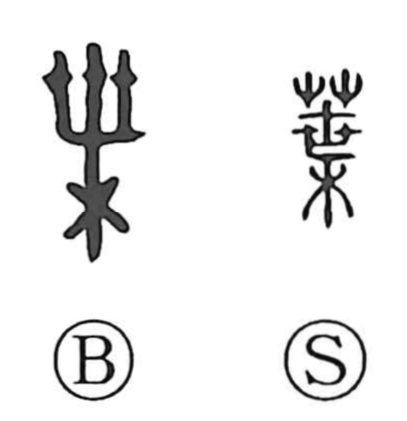

葉

Uncategorized
Kun: ha | On: yo, sho
leaf ・ page ・ generation ・ life
Explanation
A picto-phonetic graph: the phonetic element marked by the On reading yo depicts a tree with three freshly sprouted branches, and with the grass radical it points to what emerges on those shoots—the leaf. From this concrete image the character came to denote leaves generally. Because a leaf is thin, the graph was extended to thin objects, hence expressions like ichiyo no fune for a lone boat, and its use as a counter for pages (ichiyo, “one page”). Furthermore, drawing on the phonetic value yo that also conveyed the sense of life or a generation, 葉 came to be used for an age or period, as in chuyo, “the middle part of a period.”